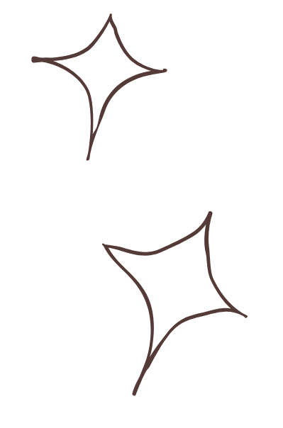
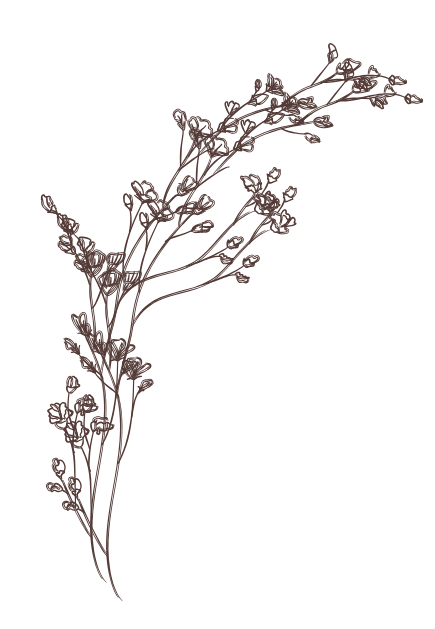
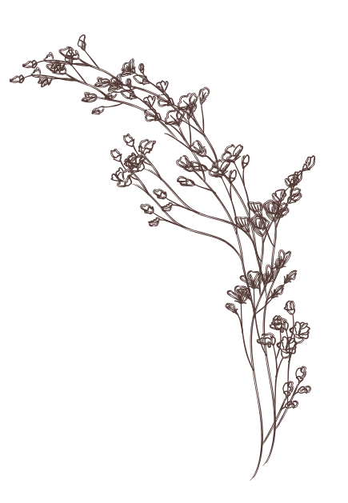
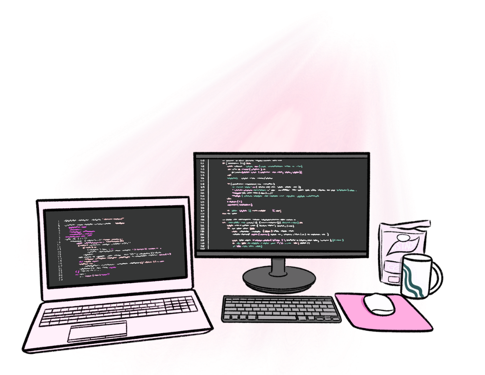
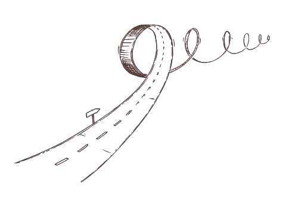
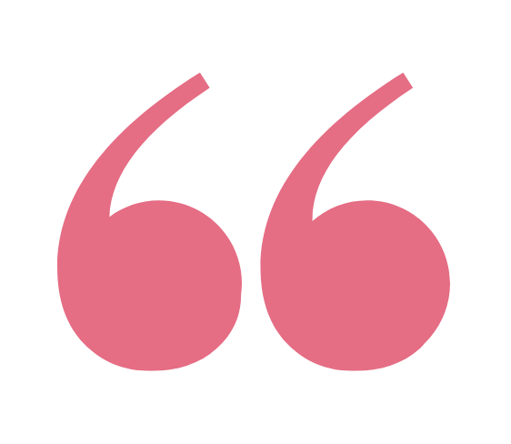

About Me
More about my journey into web development


A Little About Me
Hi! I'm Sierra Parker, a web development student with a passion for creating clean, user-friendly websites.
I'm currently building my portfolio while continuing to learn modern web development. My goal is to help businesses and individuals establish a professional online presence.
When i'm not coding, I enjoy 3D printing, gardening,and finding creative ways to solve problems.


My Journey Into Tech
Ever since I was little, I was always the one trying to figure out how things worked whenever our home computer had a problem. Whether it was fixing the printer, troubleshooting the speakers, or exploring new software, I loved learning about technology. When MySpace became popular, I spent countless hours customizing my profile with HTML and CSS, experimenting with layouts, colors, music, and animations. Looking back, that was where my passion for web development first began.
After graduating high school, I knew I wanted to build a career in technology. I joined the YearUp program, where I developed both technical and professional skills while preparing for a career in software development. Through the program, I earned an internship at Morgan Stanley as a Junior Software Developer. There, I gained hands-on experience working on an Agile development team, collaborating with other developers, and building real-world applications.
My internship inspired me to continue growing as a developer and reminded me that learning never stops. Today, I'm pursuing an Associate of Applied Science in Web Design and Development at Gwinnett Technical College, where I'm strengthening my skills in HTML, CSS, JavaScript, responsive web design, and modern front-end development. I'm passionate about creating websites that are both visually appealing and easy to use, and I'm excited to continue building projects that help turn ideas into meaningful digital experiences.

Great websites are built with creativity, curiosity, and a willingness to keep learning.